Galactic Alchemy
From Radio-Observables to Simulations and back again
SKA research at
Zurich University of Applied Sciences (ZHAW)
Centre for Artificial Intelligence (CAI)
Institute for Business Information Technology (IWI)
CAI Seminar
Sept 18, 2025
 Philipp Denzel, Yann Billeter, Frank-Peter Schilling, Elena Gavagnin
Philipp Denzel, Yann Billeter, Frank-Peter Schilling, Elena Gavagnin
From Radio-Observables to Simulations and back again
SKA research at
Zurich University of Applied Sciences (ZHAW)
Centre for Artificial Intelligence (CAI)
Institute for Business Information Technology (IWI)
Zurich University of Applied Sciences (ZHAW)
Institute for Business Information Technology (IWI)
Philipp Denzel, Yann Billeter, Frank-Peter Schilling, Elena Gavagnin
Generative AI for galaxy (component) emulation
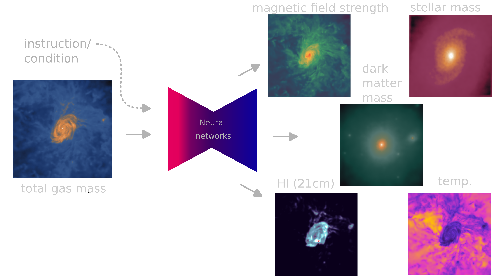
Outlook
SKACH project
- SKA project (funding: SERI/SKACH, collab: IVS & IWI):
- SKACH & Square Kilometer Array observatory
- generative modelling of plausible radio skies
- my interests:
- generative deep learning,
probabilistic models,
simulation-based inference - galactic evolution, dark matter,
gravitational lensing…
- generative deep learning,
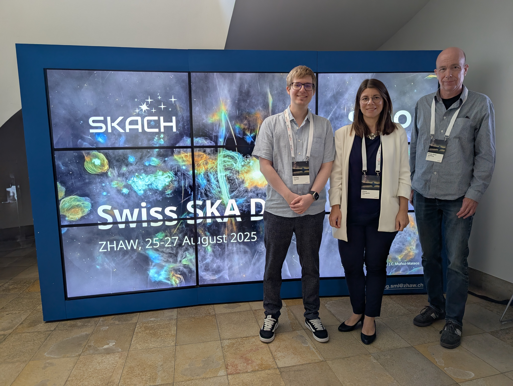
Figure 1: SKACH team at the Swiss SKA Days hosted by ZHAW (25-27 Aug 2025)
SKACH after 4 years
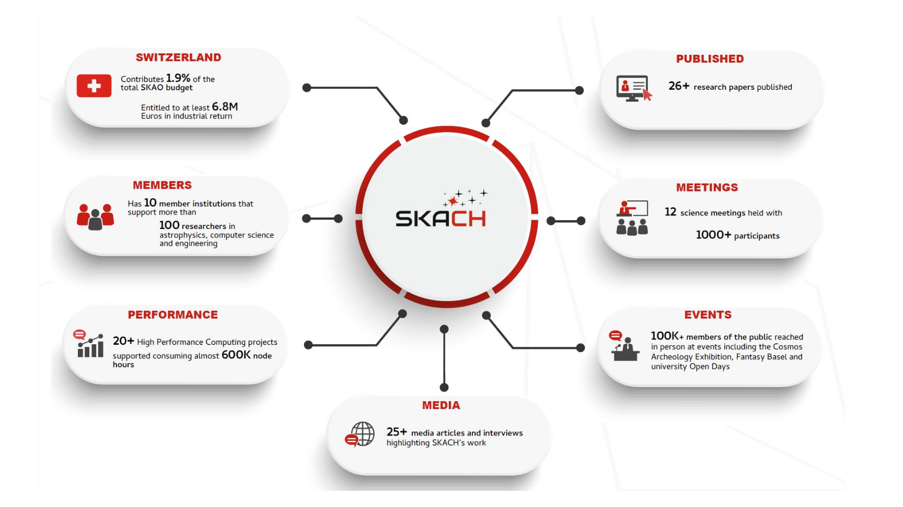
Figure 2: Credit: SKACH
One Observatory, Two Telescopes, Three Sites
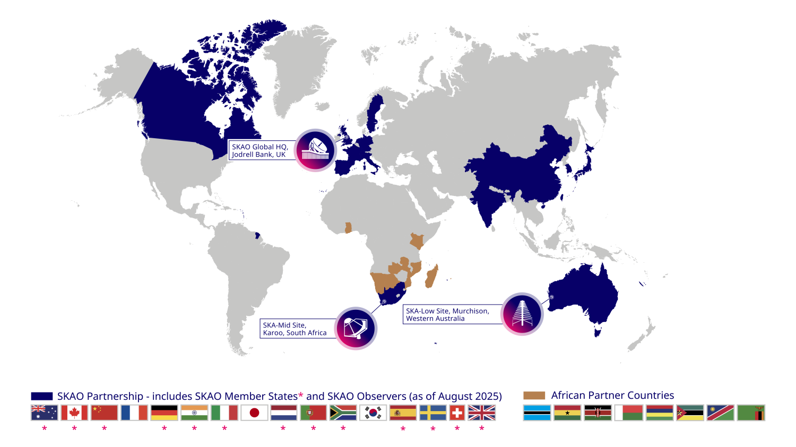
Figure 3: Credit: SKAO
SKA project in numbers
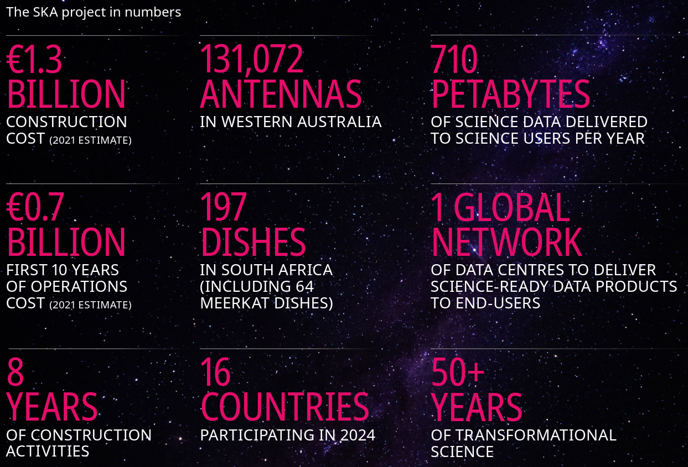
Figure 4: Credit: SKAO
SKA-Mid in South Africa
Credit: SKAO
Mid Construction
Credit: SKAO
SKA-Low in Western Australia
Credit: SKAO
Science goals
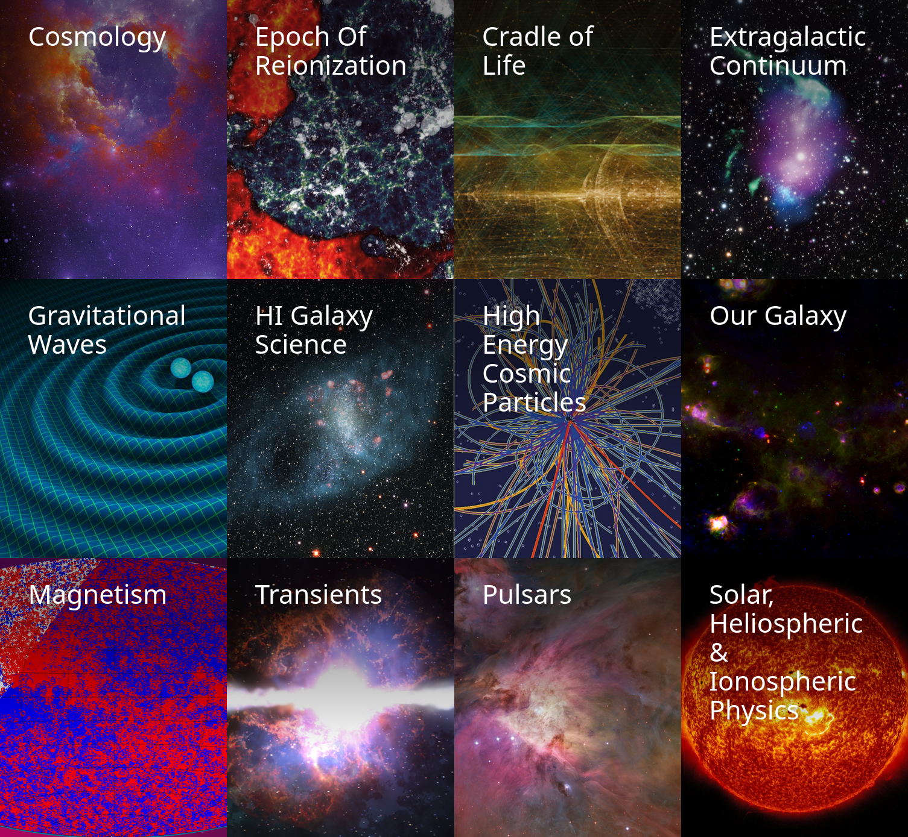
Figure 5: Credit: SKAO
How to build galaxies
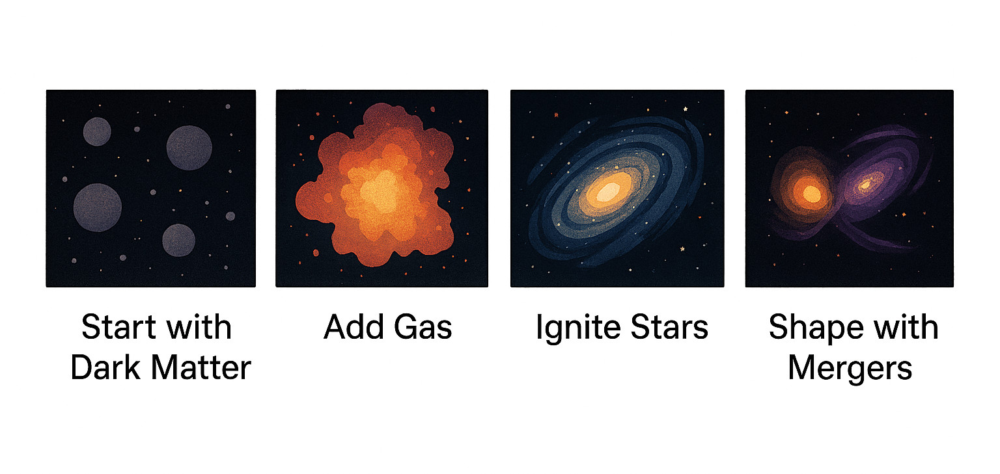
Figure 6: recipe for galaxies as imagined by GPT5
Noise as starting point (just as in diffusion models)

Figure 7: 2006, Credit: IllustrisTNG
Dark matter takes over
Credit: IllustrisTNG
Simulations as an expression of theory
- complex, realistic models
- self-consistent dynamics
- physics: on a wide range of scales
- implicit models:
- what if we want to sample more
of those galaxy models?
- what if we want to sample more

Figure 8: IllustrisTNG simulations
The cost of IllustrisTNG
Stated usage from Nelson et al (2017):
- CPU core time: 55 Mh
- on Hazel Hen (Cray XC40: typically 0.5kW per 24 core node)
So, approx. 2.29M node hours @ 0.5kW \(\rightarrow\) 1+ GWh (570'000 kg CO2e)
(A)I can do better
Our model suite ran on a mix of Nvidia V100/A100/H100/H200 GPUs
- GAN-based models required 140.25 kWh for training (70 kg CO2e)
- inference: ~1 kWh for inference
- diffusion-based models required 520.25 kWh for training (260 kg CO2e)
- inference: double the amount
Multi-domain galaxy image dataset
- projected Illustris TNG50-1 galaxies
- 7 domains: dark-matter, stars, gas,
HI, temperature, magnetic field, 21cm- SKA simulations following
Villaescusa-Navarro et al. (2018)
- SKA simulations following
- ∼ 3'000+ galaxies, 6 snapshots,
4 rotations in 3D, ∼ 504'000 images - each galaxy avg. ∼ 100'000+ particles
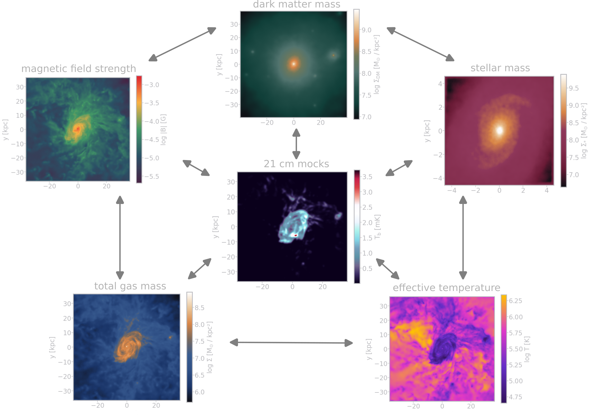
Generative Deep Learning Models
- conditional GANs (generative adversarial networks)
- diffusion-based models
- combination of both
conditional GANs

DDPM

Sampling from the models
(input, simulation, DDPM generated)
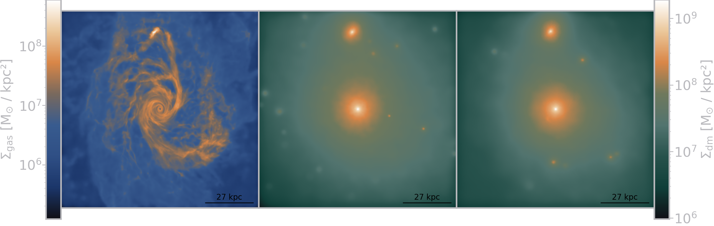
Figure 9: Gas ⟶ DM
(input, simulation, GAN generated)
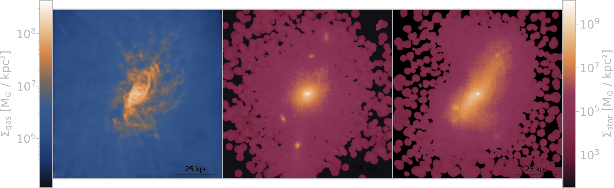
Figure 10: Gas ⟶ Stars
(input, simulation, DDPM generated)
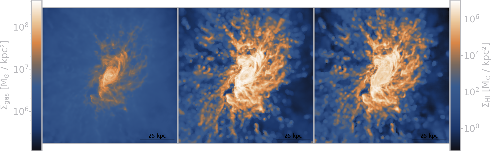
Figure 11: Gas ⟶ HI
(input, simulation, GAN generated)
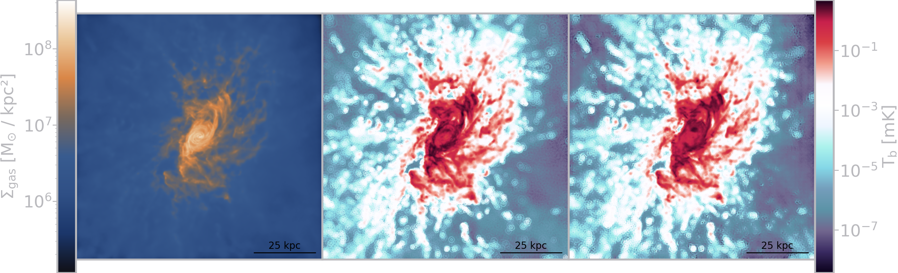
Figure 12: Gas ⟶ mock 21cm brightness temperature
(input, simulation, DDPM generated)

Figure 13: Gas ⟶ temperature
(input, simulation, GAN generated)
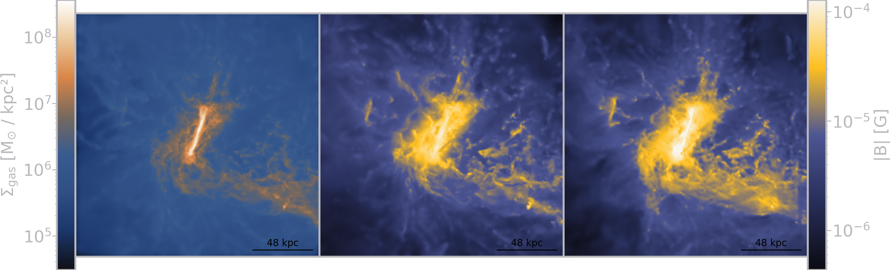
Figure 14: Gas ⟶ magnetic field strength
Does measuring quality = plausibility?
- Pixel-level CV metrics do NOT work well for this:
- MSE (mean squared error): \[ \text{MSE}\left(x, \hat{x}\right) = \frac{1}{N} \sum_{i=1}^{N} \left(x_i - \hat{x}_i\right)^2 \]
- PSNR (peak signal noise ratio): \[ \text{PSNR}\left(x, \hat{x}\right) = 10 \cdot \log_{10} \left( \frac{\text{c}^2}{\text{MSE}\left(x, \hat{x}\right)} \right) \]
- SSIM (structural similarity index measure): \[ \text{SSIM}\left(x, \hat{x}\right) = \frac{\left(2\mu_x\mu_{\hat{x}} + k_1\right)\left(2\sigma_{x\hat{x}} + k_2\right)}{\left(\mu_x^2 + \mu_{\hat{x}}^2 + k_1\right)\left(\sigma_x^2 + \sigma_{\hat{x}}^2 + k_2\right)} \]
Perceptual metrics
- Fréchet Inception Distance: \[ \|\mu_r - \mu_g\|^2 + \text{Tr}\left(\Sigma_r + \Sigma_g - 2(\Sigma_r \Sigma_g)^{1/2}\right) \]
- where \(\mu\) and \(\Sigma\) are mean and standard deviation
of features extracted from neural networks (InceptionV3)
- where \(\mu\) and \(\Sigma\) are mean and standard deviation
- or LPIPS (Learned Perceptual Image Patch Similarity)
Astronomical/astrophysical metrics
- structural astronomical CAS parameters by Conselice (2003)
- Asymmetry: compare original and 180-degree-rotated image
- Smoothness/Clumpiness: compare original and Gaussian-blurred image
- Concentration: Means of spatial distributions within fixed radii
- Centre of mass drift
- Radially averaged profiles
- Integrated quantities
- Power spectra
Asymmetry
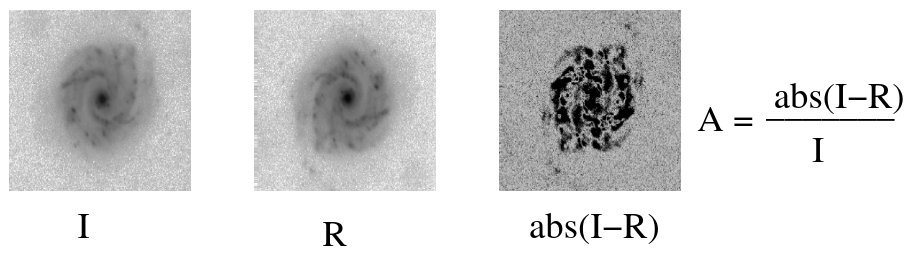
Figure 15: I is the original map and R the rotated map;
Asymmetry parameter by Conselice (2003);
Clumpiness
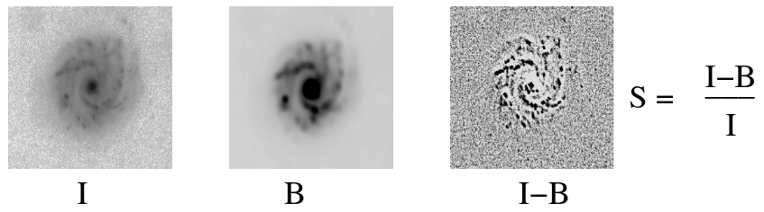
Figure 16: I is the original map and B the blurred map;
Clumpiness parameter by Conselice (2003)
Concentration
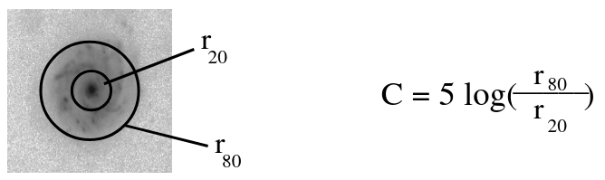
Figure 17: (we use only 2$×$r50 as proxy for our metric)
Concentration parameter by Conselice (2003)
Asymmetry deviation (between simulations and GAN-generated)
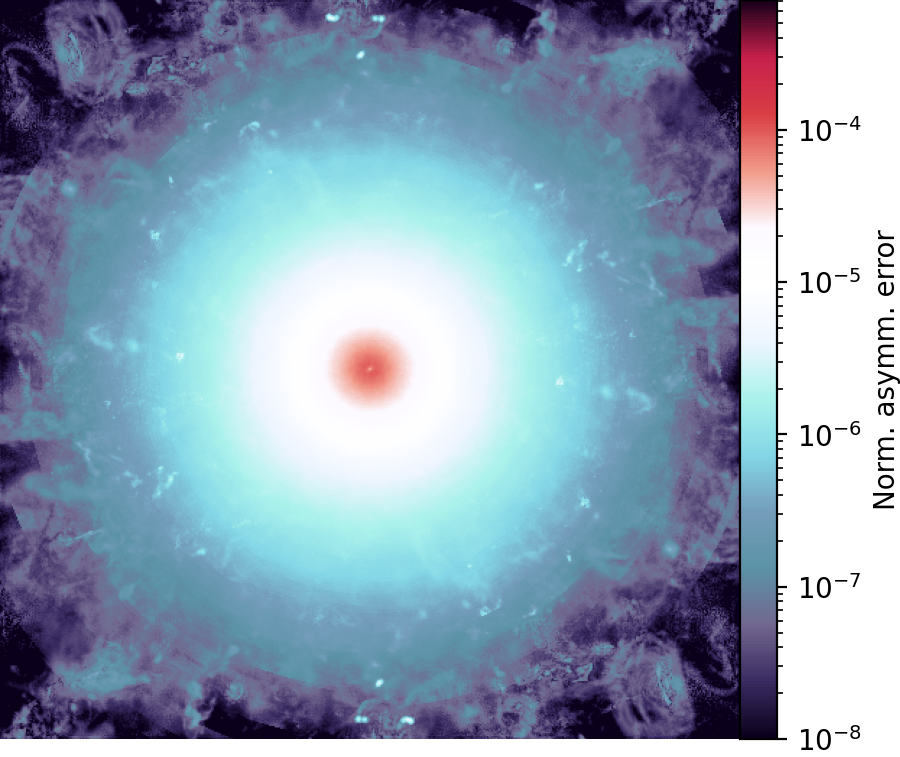
Figure 18: Mean asymmetry deviation of the evaluation set (mock 21cm temperature);
Denzel et al. (in prep.)
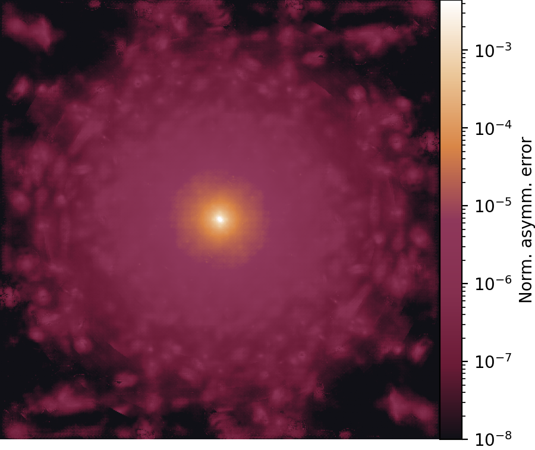
Figure 19: Mean asymmetry deviation of the evaluation set (stellar mass);
Denzel et al. (in prep.)
Clumpiness deviation (between simulations and GAN-generated)
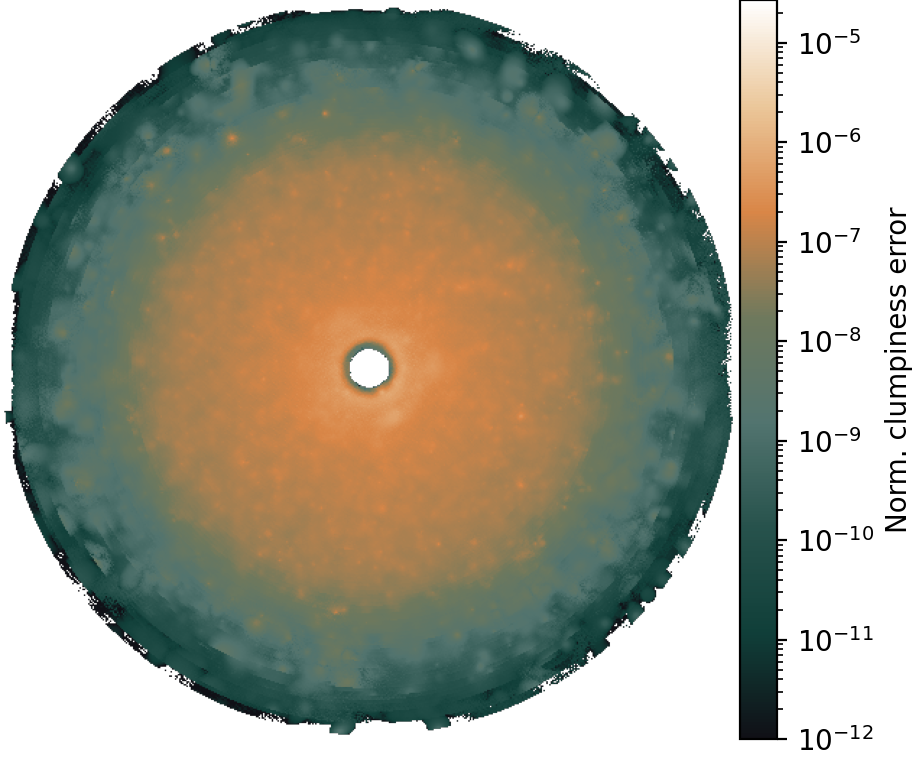
Figure 20: Mean clumpiness deviation of the evaluation set (Gas ⟶ DM);
Denzel et al. (in prep.)
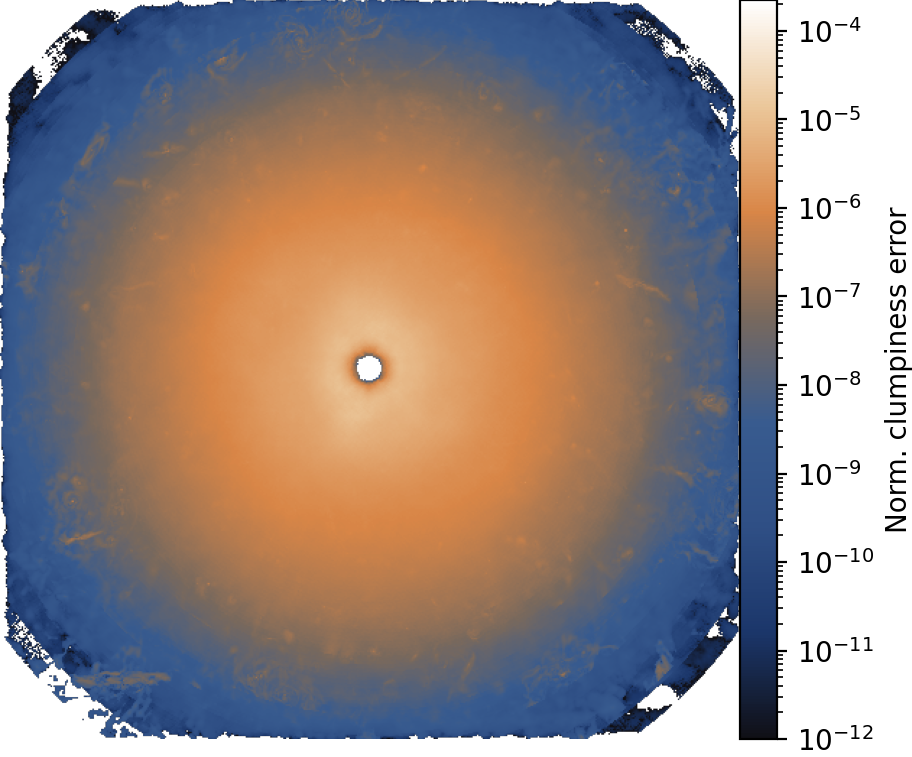
Figure 21: Mean clumpiness deviation of the evaluation set (DM ⟶ Gas);
Denzel et al. (in prep.)
Centre-of-mass drift (from simulations to DDPM-generated)
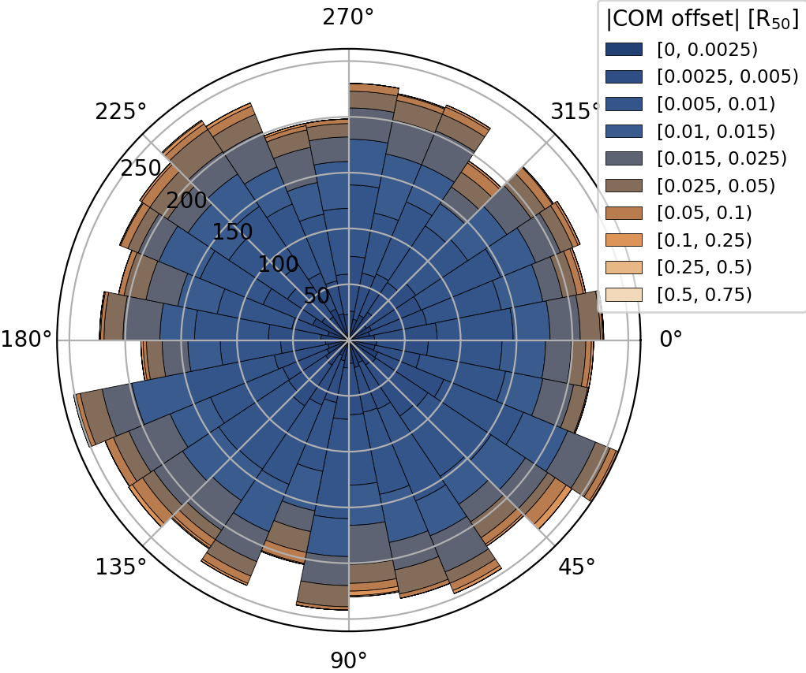
Figure 22: Mean clumpiness deviation of the evaluation set (Gas ⟶ HI);
Denzel et al. (in prep.)

Figure 23: Mean clumpiness deviation of the evaluation set (Gas ⟶ Stars);
Denzel et al. (in prep.)
Integrated quantities (concentration proxy)
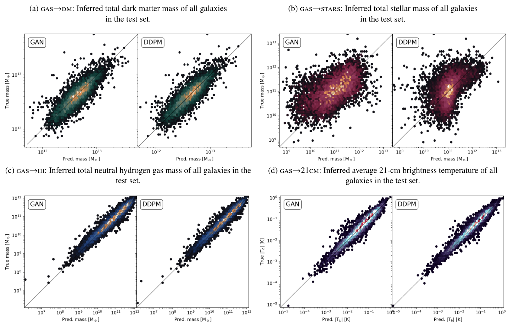
Figure 24: Denzel et al. (in prep.)
Our Findings
- Pixel-based metrics work only to a degree, but are
insensitive to nuances determining physical plausibility - Perceptual metrics (such as FID) correlate strongly with astrophysics
- Updated and tuned GAN architecture matches performance of diffusion models
What's next
- Investigate perceptual metrics (LPIPS): interpretability?
- Integrate digital-twin simulations of SKA telescope systematics
- Expand domain translation from 2D to 3D
- AI-enhancements for simulations on-the-fly
(see PASC project ARTS4SKA project) - Plausible galaxy sampler for gravitational lens modelling
(collab with UZH)
References & Contact
- simulations: IllustrisTNG project
- 21cm mocks: Villaescusa-Navarro et al. (2018)
- GitHub repository:
https://github.com/CAIIVS/chuchichaestli - PyTorch astronomy metrics:
https://github.com/phdenzel/skais-mapper - cGAN: Isola et al. (2016)
- DDPM: Ho et al. (2020)
Email: philipp.denzel@zhaw.ch